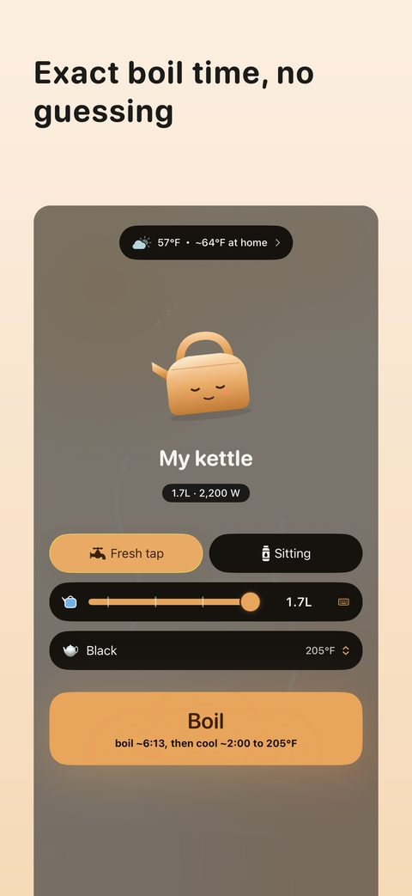
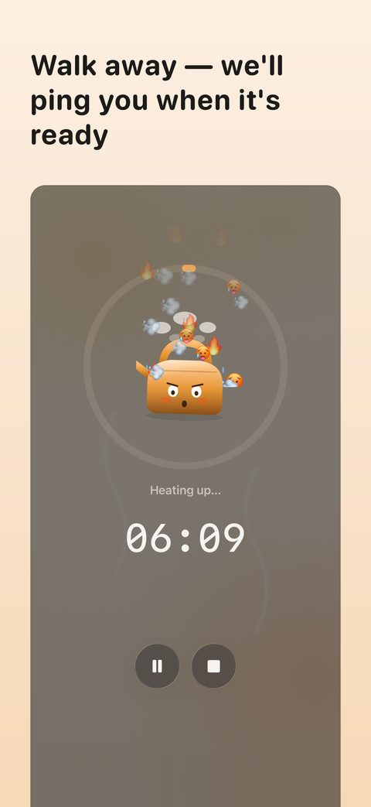
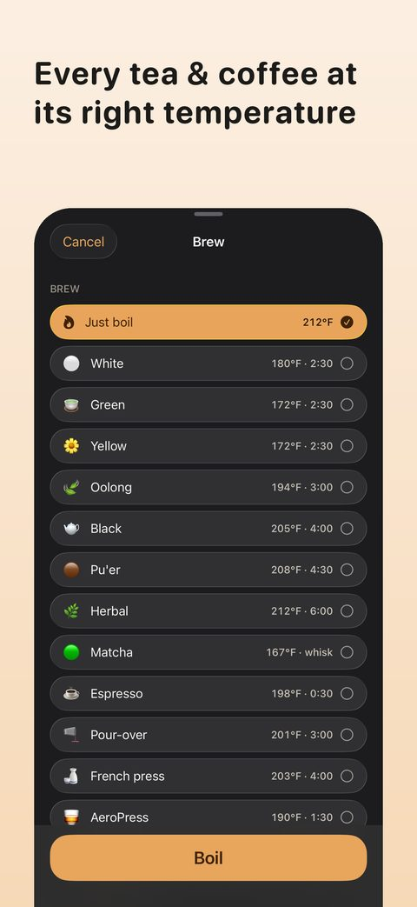
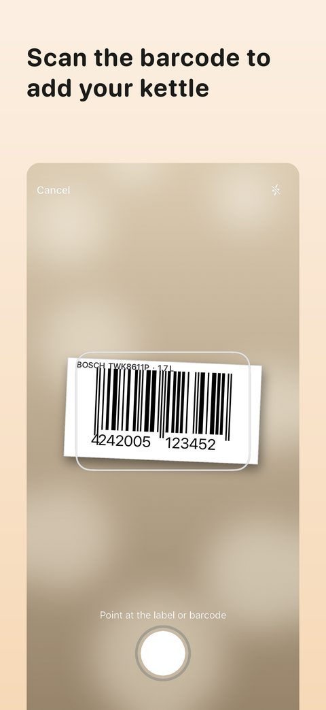

Keetle
Know exactly when your kettle boils — no more guessing or babysitting the lid.
Or scan with your iPhone
Know exactly when your kettle boils — no more guessing or babysitting the lid.
Or scan with your iPhone




Worked out from your kettle's wattage, the water amount and its starting temperature — not a generic countdown.
The countdown follows you to the Lock Screen, the Dynamic Island, widgets and Control Center. Walk away — Keetle pings you when it's ready.
Pick yours from the catalog, or scan its barcode or label — power and capacity filled in.
Tap and room temperature estimated from your local weather, so the starting point is right.
Works with electric kettles and with stovetop ones — pick the burner when you boil.
Boil, then cool to the exact temperature for green tea, oolong or pour-over, with named presets and a steep timer.
A subscription or a one-time lifetime purchase, billed by Apple.
Keetle uses the heat equation — t = (m·c·ΔT) / (P·η) — combining your kettle's power and efficiency with the water volume and a weather-aware starting temperature, so the estimate fits your kettle, not an average one.
Try the maths yourself → a boil-time calculator that runs in this page, no app needed.